Exercise 8
18.03.2015
Computer-Controlled Machining
Assignment
Let's SURF!
For this assignment I want to made also useful for the next composite lesson, so I decided to make a thing that I want since when I was young: a Surf board!
Online I've discovered a good free software that allow to create a surf board starting from a simple 2D outline.
BOARD CAD
Step 1
Design with Inkscape or another vector software the outline of the shape
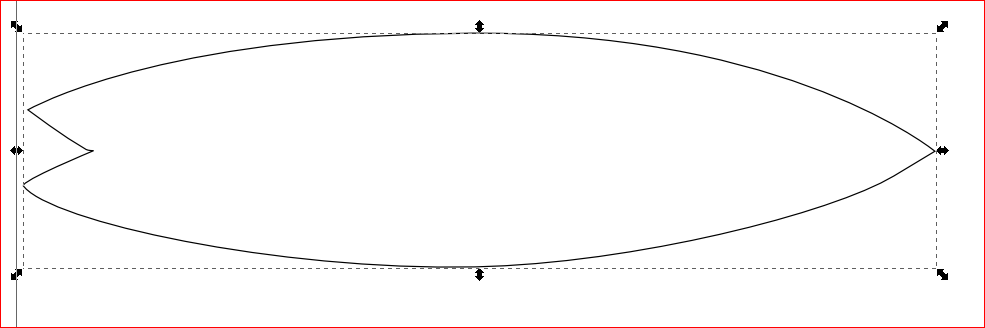
DOWNLOAD:
shape
SVG
Step 2
Import the vector fine into BoardCAD
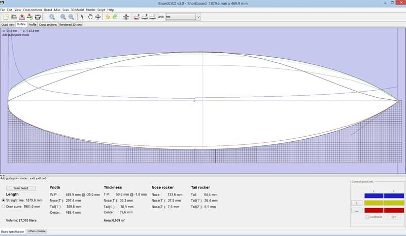
Step 3
Modify the board like thickness, nose rocker, tail rocker etc using the button in the top panel
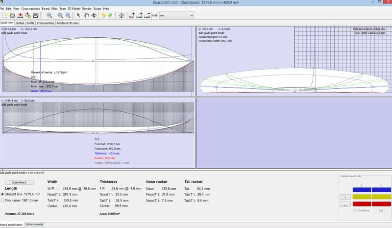
Step 4
Export a STL 3D file from File Menu
Step 5
Open 123D Make and import the 3D Model.
In the option you have to customize first the dimension of the wood panel, than the size of the object and the kind of slicing that you want.
For this project I choose the Stacked slice that made cross section of the slice and permit to have the best shape to put composite materials next time
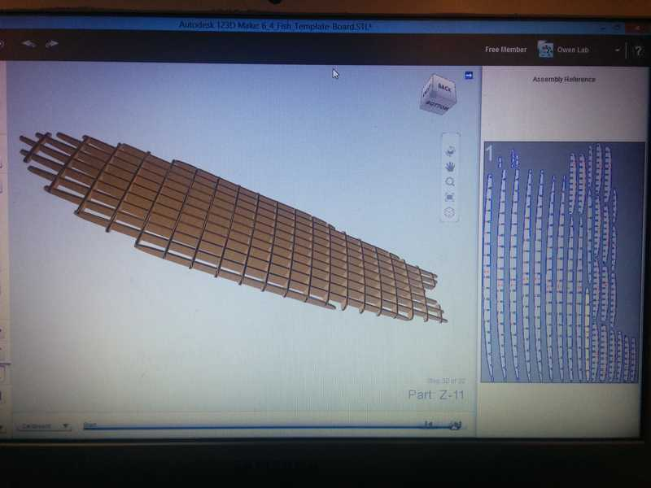
Step 6
In the export menu, I selected the size of the mill (in my case 6mm) and I've exported the DXF to be opened in Rhino
I used Rhino to add the rounded angle, check the path and nesting.
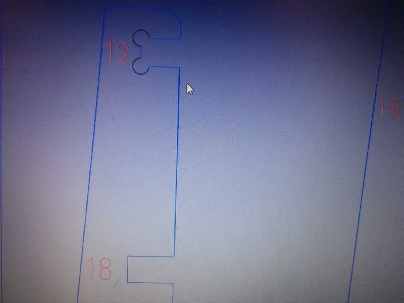
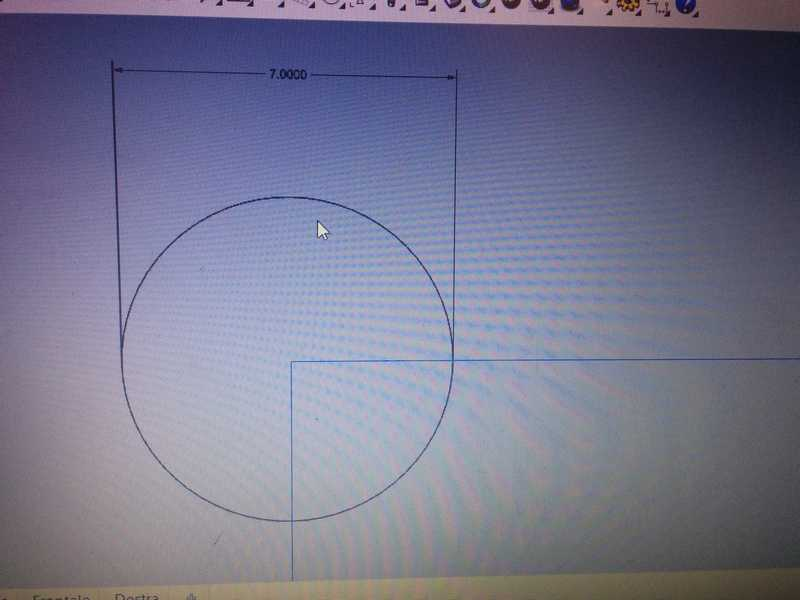
123D Make also put a very useful layer with the number of the slices, but I removed it to be faster during the machinig
RHINO FILE:
FabSURF
Step 7
Export the file in DXF format and open it in V-Carve, set the parameter for the Shopbot CNC and add some tab to hold the pieces during the cut
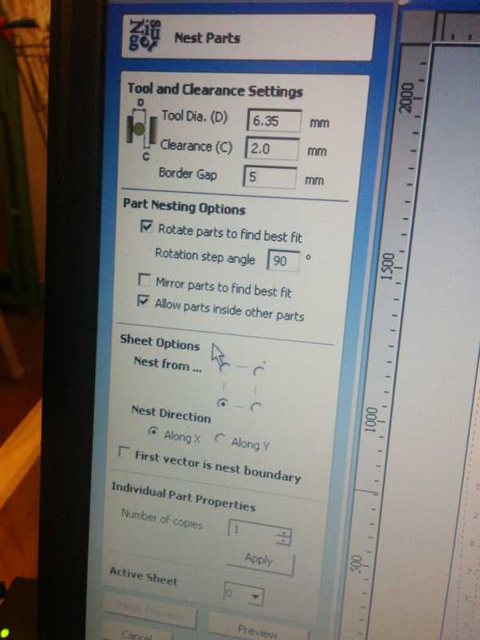
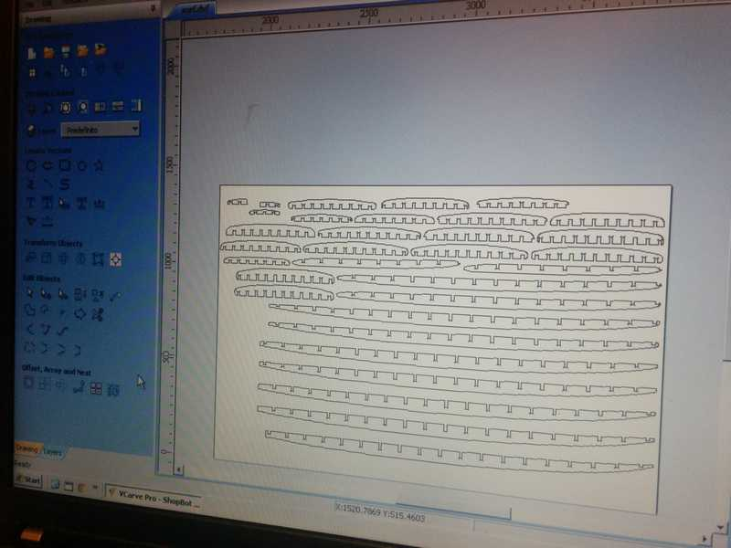
Step 8
Create the g-code, check the dimension of the wood, make the zero of X Y Z axis and...
Let's mill !!!
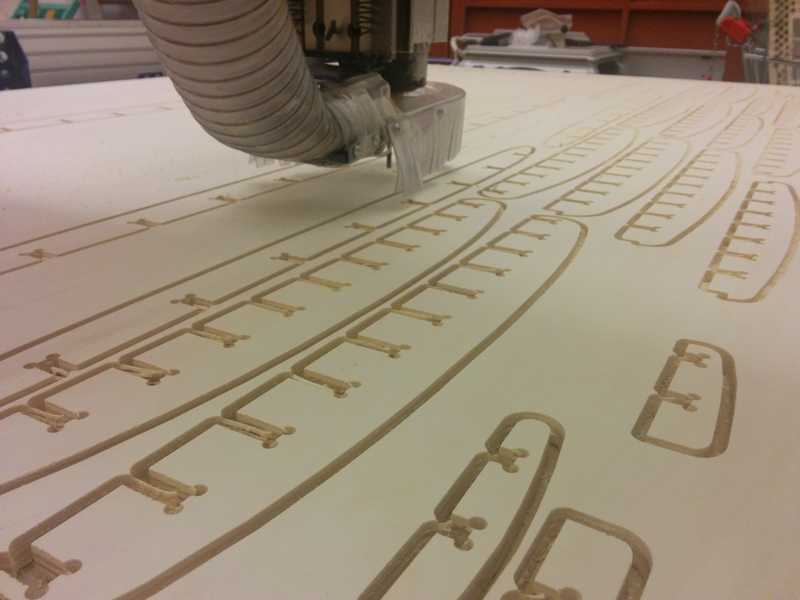
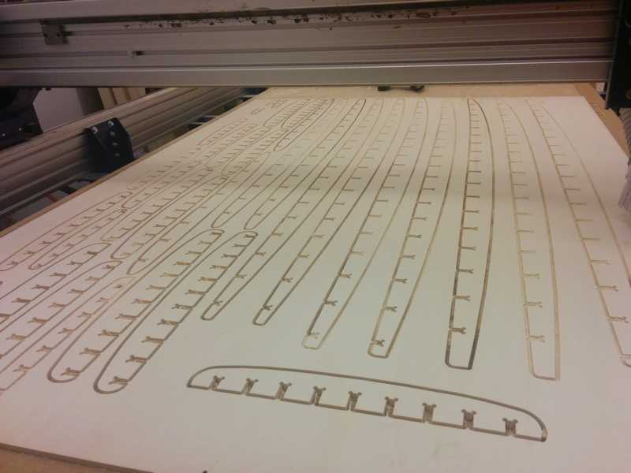
Step 9
Assembly all the slice just by the joints and MAKE SOMETHING SUMMER
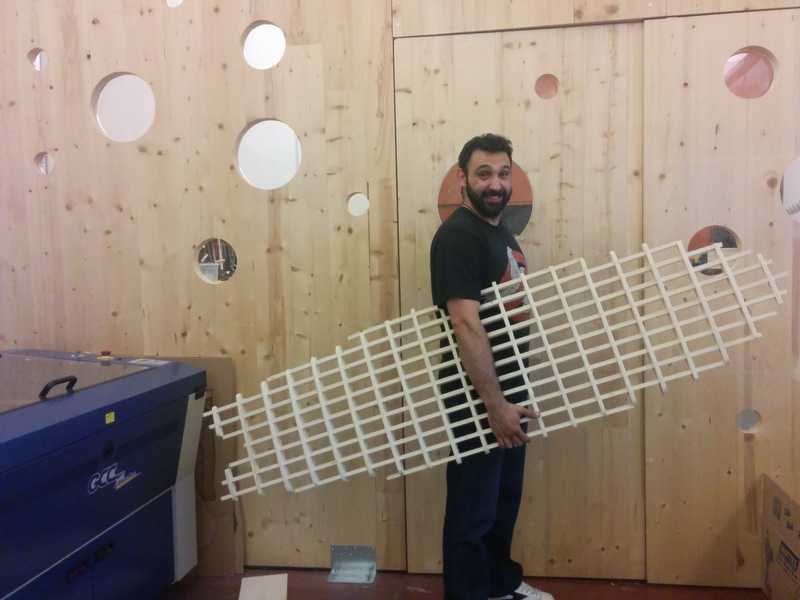
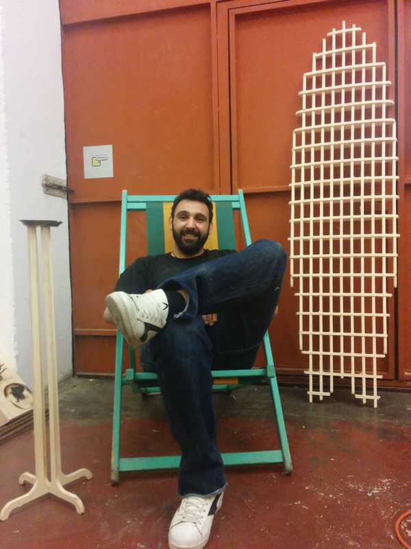
Step 10
Make composite material with fiber and epoxy resin to cover the board as shown in the
Week 12
Bending workbench
For this assignment I asked to some guys of Fablab Torino which tool may need our fablab and the best suggest was a workbench to blend plexiglass or thin metal sheet, so I started to design this tool with Rhinoceros. I also added some mechanical thing and I will make also this project next time!
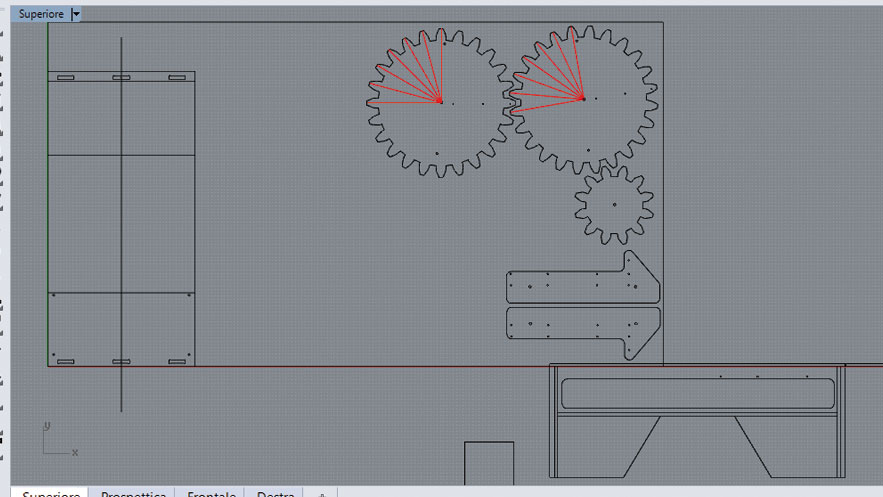
{kind=link}